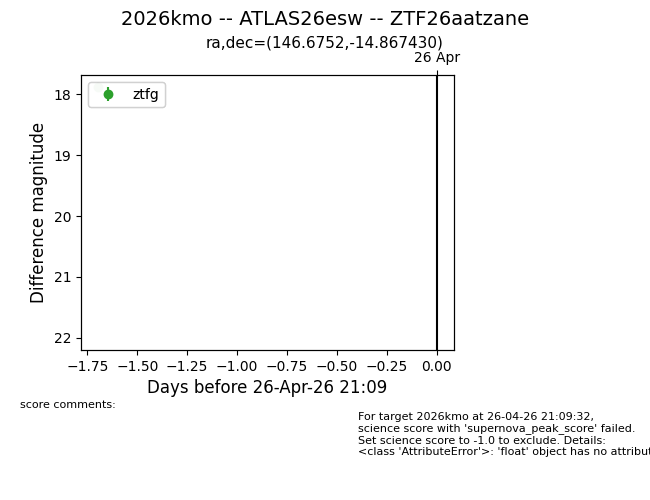
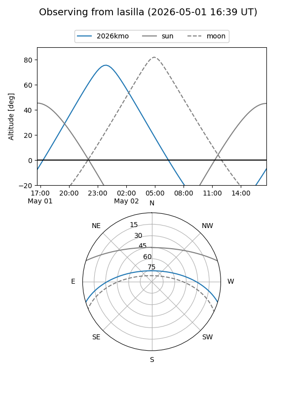
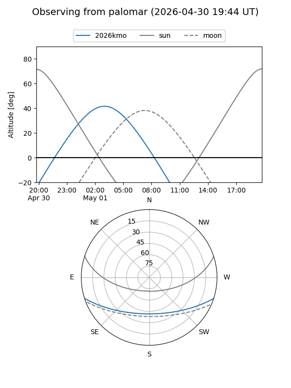

2026kmo
Target 2026kmo at 2026-04-26 21:10
Aliases and brokers:
FINK: link
Lasair: link
ALeRCE: link
TNS: link
YSE: link
alt names
ZTF26aatzane (ztf,fink_ztf)
2026kmo (tns,yse)
ATLAS26esw (atlas)
Coordinates:
equatorial (ra, dec) = 146.6752,-14.86743
equatorial (HMS+DMS) = 09:46:42.05,-14:52:02.75
galactic (l, b) = (250.3460,+28.59069)
Flags:
Photometry:
last ztfg=17.88
1 ztfg detections
Lightcurve

Visibility


Additional plots